The lean controller was tuned at one slab height. This makes the height a task parameter, changes it without touching a cost weight, and measures what degrades.
The braced-lean result rests on one workcell geometry. The slab face sits at
0.985 m in lean.xml and the robot stands a fixed distance from
its near edge, and both numbers were arrived at by sweeping them until the brace
worked — the XML comment history records the face moving 0.75 → 0.85
→ 0.87 → 0.985 m and the body x moving 1.0125 → 0.78 → 1.04 m,
each time with keyframe targets re-solved in lockstep. A controller tuned that way
has an obvious question against it: does it work at a table it was not tuned on,
or is the geometry load-bearing?
Everything else in the ICRA submission is a claim about a controller. This is a claim about its domain, and it is the cheapest generalisation axis available — the height is one number, the task is otherwise unchanged, and the real robot meets tables of many heights.
Table height is now MJPC task parameter index 7,
residual_Table H — the absolute world z of the slab's physical
top face, in metres. 0 means off and uses the compiled model, so
every pre-existing run is byte-identical. A non-zero value makes
lean::TransitionLocked rewrite the table body's z on the first
transition, restretch the four cosmetic legs to span floor-to-underside, and shift
the free object and the target mocap by the same delta.
The object rides the slab rather than staying at a fixed world height. A block
left at world z while the table dropped 200 mm would simply fall off, so the
manipulation task is held fixed in the table frame: same depth from the near
edge, same lateral offset, same height above the face. Strategy 25's reach rung is
already written that way — reach_target_table: [0.55, 0.04, 0.15]
— so no target had to be re-authored.
table_surface_pos framepos and the
compiled table_top half-extents: the Brace Pos target, the brace-force
proximity gate, Hip / Leg / Body-Table Clearance, and the reach rungs. Those follow
the table with no edit. What does not follow it is the joint-space and CoM-cap
family — com_cap_fwd 0.145 m, pelvis_cap_fwd 0.13 m,
lean_nominal_x 0.06 m, brace_erect_target 0.38,
brace_lead_x0 0.24 — all fixed constants fitted at one height.
The split is the whole experiment.
Recorded ahead of the sweep so they can be scored rather than reconstructed.
com_cap_fwd (145 mm), not arm
reach. The arm has ~460 mm of radius and the slab edge does not move
horizontally, so kinematic reach is not what runs out first.build_cmake/bin/lean_bench --task "Lean H12 Magpie" --strategy 25 \ --table_h <face z> --seed <n> --total_time 75 --threads 6 --spp 3 \ --out <tag>.csv --qpos_out <tag>.qpos.csv studies/table_height/sweep.py --out runs/recon --heights 0.785,0.885,0.985,1.035,1.085 --seeds 1 studies/table_height/analyze.py --runs runs/recon --out figs studies/table_height/render_video.py --qpos ... --table_h ... --out ....mp4
One run per point, run serially under
systemd-run --user --scope -p CPUQuota=700%: MJPC saturates every
planner thread it is given and this box is a workstation. Nothing is recompiled
between points — the height is a parameter, so all runs share one binary and
one strategy JSON. Outcome is decided by the bench, not by eye:
fell if the pelvis drops below 0.5 m, complete if the terminal phase
is reached and held 3 s, stalled otherwise.
--threads 4 and fell at t = 3.4 s at
--threads 6. Every number below is therefore an aggregate over
3 seeds at one fixed thread count, and no single run is used to argue
anything.
stand_up with every left
body at zero, so something was already resting on the table before the brace
began.
(3) Load was first summarised as a median over the whole brace phase, which is
mostly approach with no contact and reads 0 N even when the forearm peaks at
168 N. Load statistics are now taken over the seated window — pad
within 5 mm of the face.
lean::ComputeMetrics, reported not fixed.
They are Allen's file and neither affects the controller, but both make its
monitoring channels read wrong for this ladder.
brace_force is right_contact ? right_contact[0] : 0.0,
keyed on a right-hand sensor under the comment “right arm always braces,
left arm always reaches” — while the model's brace geoms are
left_forearm_pad and left_wrist_pad. Measured: the
metric reads 0.00 N for the entire run while the left forearm carries
97–168 N. The deploy monitor therefore shows no brace force during a real
brace. Separately, the whole reach_err / reach_tgt_*
family is gated on kf.name == "reach_to_target", a rung name
strategy 25 never uses, so it is nan for the entire braced ladder. The reach
column here is computed in the bench from the right gripper and the target
mocap instead.
6 of 15 runs reached the terminal phase. At the compiled height the ladder completes 3 of 3 times; across every off-nominal height together it completes 3 of 12.
| table face | complete | in contact % | at face % | pad min (mm) | forearm N | wrist N | right arm N | torso N | pelvis N | forearm peak N | CoM past toes (mm) | tilt peak (deg) | reach err (mm) |
|---|---|---|---|---|---|---|---|---|---|---|---|---|---|
| 0.785 m | 0 / 3 | 13 | 48 | -34 | 37 | 21 | 28 | 398 | 0 | 191 | +625 | 61.7 | 361 |
| 0.885 m | 0 / 3 | 11 | 19 | -836 | 46 | 6 | 8 | 0 | 0 | 143 | +371 | 105.6 | 201 |
| 0.985 m | 3 / 3 | 32 | 32 | -1 | 106 | 0 | 0 | 0 | 0 | 234 | +185 | 31.4 | 330 |
| 1.035 m | 3 / 3 | 23 | 23 | +0 | 77 | 0 | 0 | 0 | 0 | 179 | +34 | 24.2 | 315 |
| 1.085 m | 0 / 3 | 0 | 100 | -230 | 1 | 0 | 0 | 0 | 0 | 0 | -85 | 55.5 | 442 |
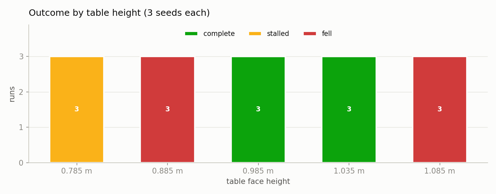
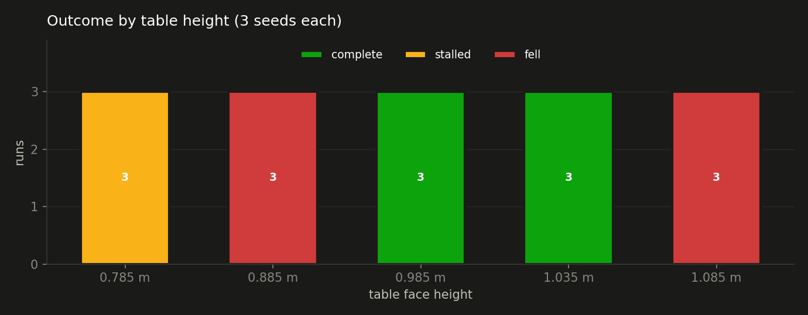
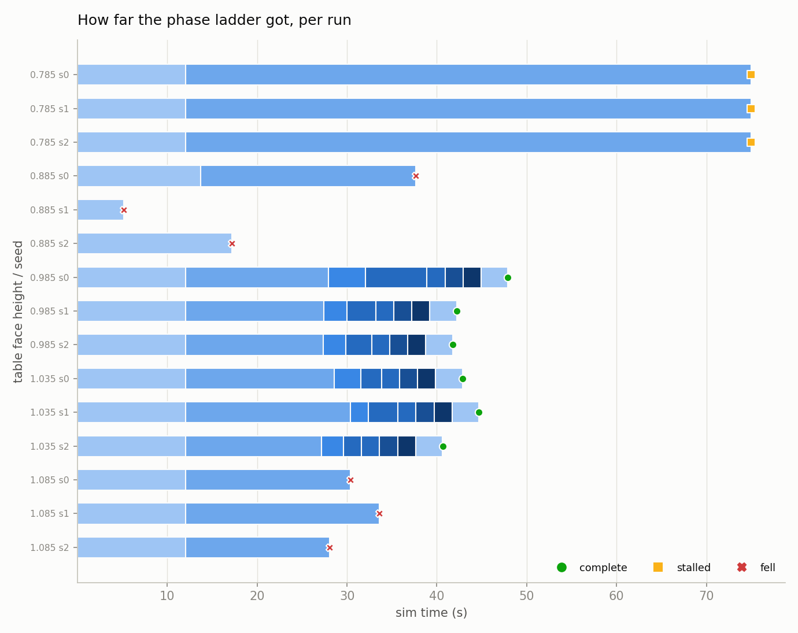
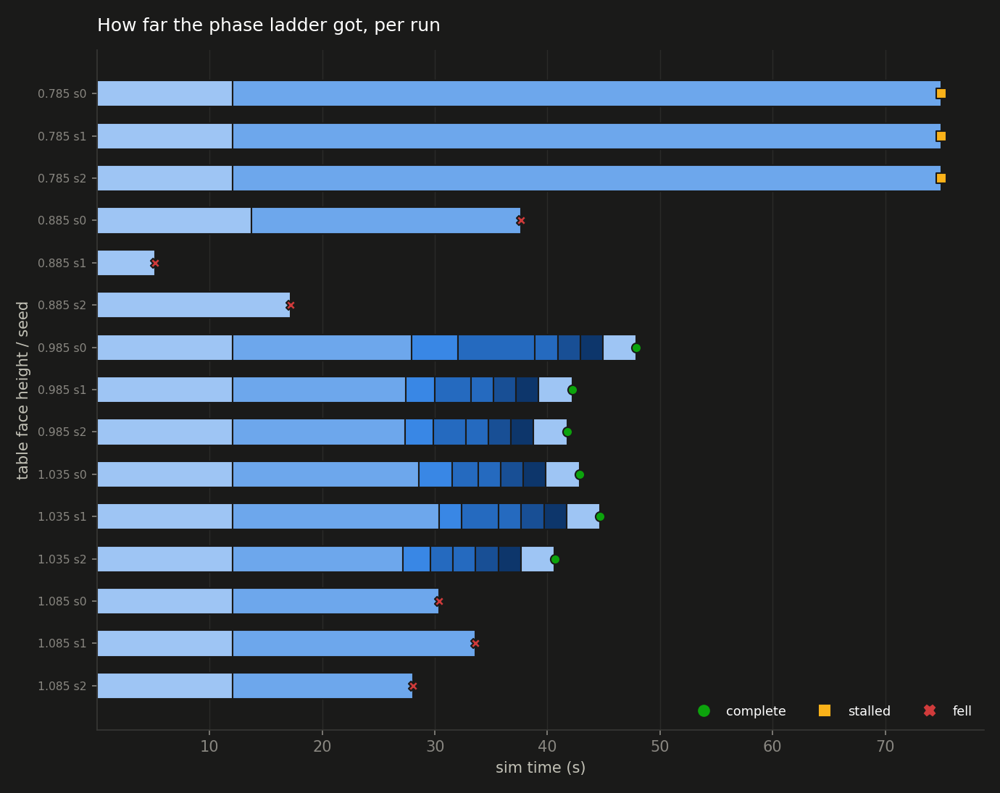
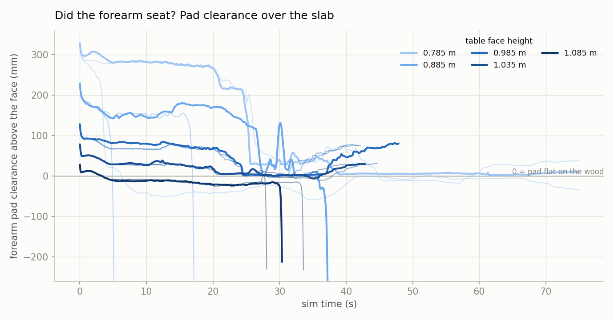
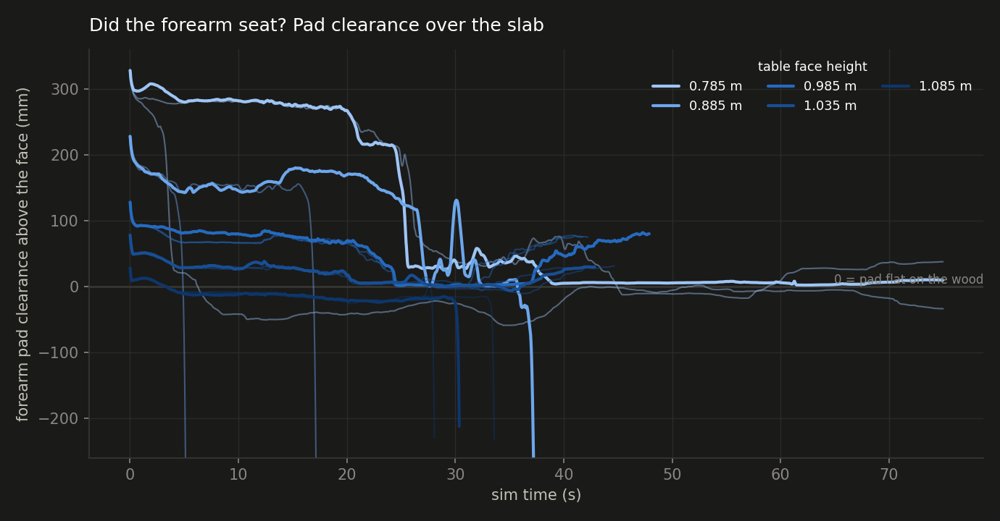
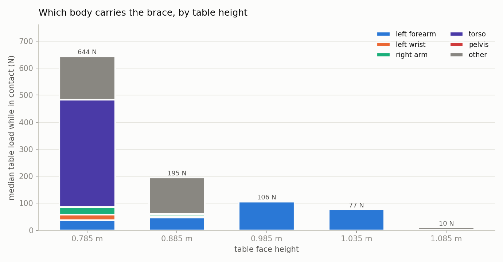
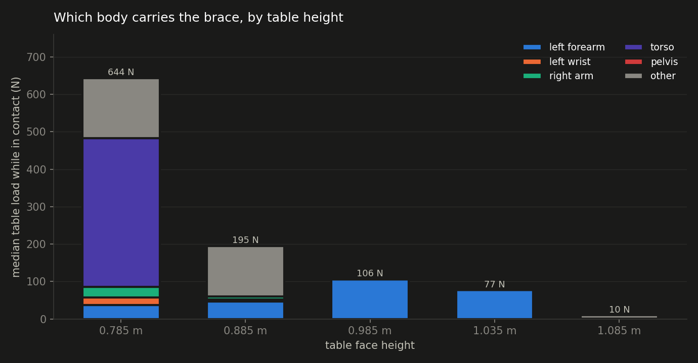
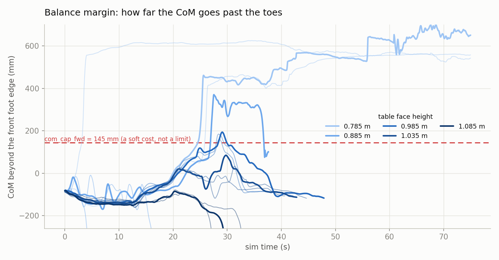
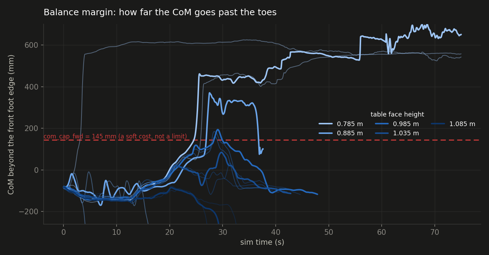
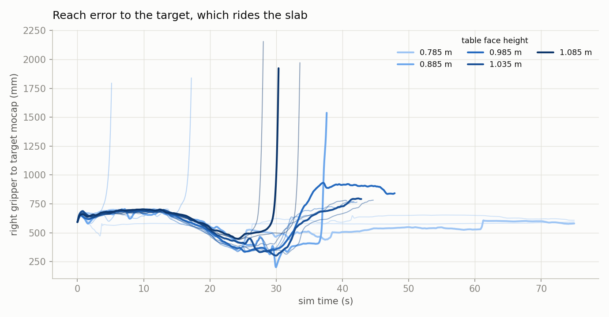
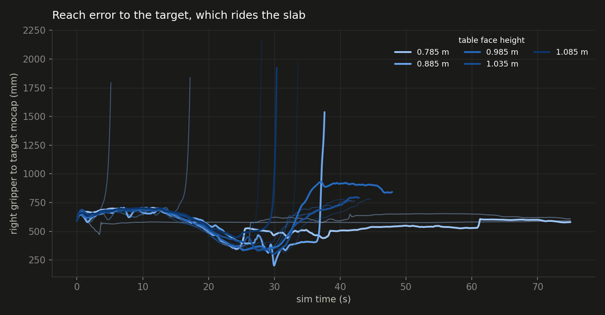
| height / seed | outcome | t end (s) | brace (s) | seated (s) | pad min (mm) | forearm peak N | CoM past toes (mm) | reach err (mm) | wall (s) |
|---|---|---|---|---|---|---|---|---|---|
| 0.785 / s0 | stalled | 75.0 | 63.0 | 8.2 | +2 | 191 | +702 | 345 | 592 |
| 0.785 / s1 | stalled | 75.0 | 63.0 | 27.1 | -34 | 218 | +562 | 361 | 604 |
| 0.785 / s2 | stalled | 75.0 | 63.0 | 0.0 | -59 | 0 | +625 | 575 | 658 |
| 0.885 / s0 | fell | 37.6 | 24.0 | 2.7 | -836 | 143 | +371 | 201 | 271 |
| 0.885 / s1 | fell | 5.2 | 0.0 | 0.0 | — | — | — | — | 37 |
| 0.885 / s2 | fell | 17.2 | 0.0 | 0.0 | — | — | — | — | 125 |
| 0.985 / s0 | complete | 47.9 | 20.1 | 7.6 | +0 | 234 | +194 | 336 | 329 |
| 0.985 / s1 | complete | 42.2 | 18.0 | 5.7 | -1 | 265 | +185 | 328 | 298 |
| 0.985 / s2 | complete | 41.7 | 17.9 | 5.2 | -1 | 197 | +160 | 330 | 289 |
| 1.035 / s0 | complete | 42.8 | 19.5 | 4.5 | +0 | 256 | +85 | 302 | 300 |
| 1.035 / s1 | complete | 44.7 | 20.4 | 9.0 | -5 | 179 | +34 | 315 | 317 |
| 1.035 / s2 | complete | 40.6 | 17.6 | 2.2 | +4 | 57 | +21 | 376 | 280 |
| 1.085 / s0 | fell | 30.4 | 18.4 | 0.0 | -212 | 0 | -85 | 448 | 201 |
| 1.085 / s1 | fell | 33.6 | 21.6 | 3.3 | -232 | 21 | -78 | 442 | 238 |
| 1.085 / s2 | fell | 28.1 | 16.1 | 0.0 | -230 | 0 | -97 | 439 | 195 |
The compiled height completes 3 of 3. Every other height together completes 3 of 12 — 0 of 6 below nominal, 3 of 6 above.
com_cap_fwd at peak, worst 625 mm at 0.785 m. That constant was fitted at one height and does not move with the slab.Per height, the fraction of brace samples with the pad at face level, and the fraction actually carrying force: 0.785 m 48% at face / 13% in contact, 0.885 m 19% at face / 11% in contact, 0.985 m 32% at face / 32% in contact, 1.035 m 23% at face / 23% in contact, 1.085 m 100% at face / 0% in contact.
At the heights that complete, the two agree to the sample (0.985 m 32%, 1.035 m 23%), so a pad at face level is a pad under load. They come apart at the failures: the tallest slab holds the forearm at face level for the whole brace and never touches it, because the arm is outboard of the wood rather than on it. The geometric test alone scores that 100%, so seating has to be defined by newtons.
Peak forearm load by height: 0.785 m 191 N, 0.885 m 143 N, 0.985 m 234 N, 1.035 m 179 N, 1.085 m 0 N.
At the lowest slab the torso carries 398 N and the forearm — the only link the task declares as a brace — carries 37 N. The robot rests its chest on the wood, which is why those runs end on the clock instead of on the floor. A pass/fail flag scores them the same as the tallest slab, which fails the opposite way.
This refutes hypothesis 2 as a general explanation. At 1.085 m the CoM peaks behind the toes (-85 mm), so a forward excursion cap cannot be what ends those runs. The slab sits above the reachable brace envelope, the robot gets no support at all, and it topples away from the table. com_cap_fwd remains a candidate for the low end only.
Across all 15 runs: 6 completed, 3 stalled to the 75 s cap, 6 fell.
com_cap_fwd at its
current 0.145 against a value scaled by (slab face − ankle height), 3 seeds
each, nothing else changed. Falsified if the scaled arm completes no more often
than the fixed one.--total_time 140 costs about 10 min
each and turns a censored outcome into a real one. Queued as
studies/table_height/runs/long.